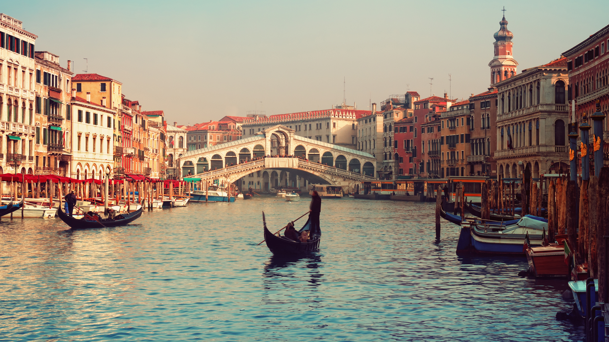

Venecia
Es uno de los sitios turísticos más visitados de Europa, por la particular característica de sus paseos en góndolas. Esa misma característica es la que podría hacerla desaparecer. La ciudad se esta hundiendo poco a poco y el crecimiento del mar, el cambio climático y el tráfico de botes podrían acelerar la inundación de la ciudad. Ya no es tan lejano pensar en Venecia bajo agua en algunas décadas.
Camino del Inca, Machu Picchu
Es una de las atracciones turísticas más impresionantes del mundo. Cada año, millones de personas lo visitan, la razón principal de su peligro inminente. Sus construcciones de piedra se debilitan y poco a poco se hunden en la tierra. Ya se están tomando medidas, y solamente pueden entrar 2500 personas por día.